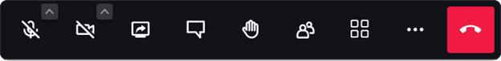

How do I use Jitsi?
There are many ways to use Jitsi, but Jitsi Desktop and web version are the most relevant to
the ALF. The web version is the quickest way to get started- so this method is usually
preferred!
-
To start a meeting, you can go on the online website and configure your settings through
the setting icon and adjust your camera, volume, display and language settings. On the desktop
version, there will already be an option through the settings icon.
-
Once you save your settings, it will prompt you to make a unique meeting ID name and you
may start the meeting. If the meeting was made on your browser history, you will have the
option to go back through the “Recent” list.
-
Inviting other participants can be done by sharing the link. Scheduling a meeting can be
done by embedding the link into a Google Calendar date or any other third party scheduling
software.
This is the bar on the bottom of your screen that will allow you to adjust your settings.
The “...” feature will allow you to adjust video quality, share links with participants, and
access the user settings.
